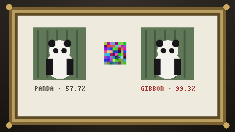

In 2014, researchers discovered that adding a whisper of carefully chosen noise, invisible to any human, could make a state-of-the-art image classifier see whatever an attacker wanted. The panda on your left is, to the network, a gibbon. Nothing you can see about the picture has changed.
Adversarial examples revealed something uncomfortable: these systems do not see the way we do; they merely agree with us most of the time. A few stickers can turn a stop sign into a speed-limit sign. The lesson of this gallery begins here: a model can be excellent and fragile at the same time.
READ THE PAPER · ARXIV.ORG/ABS/1412.6572 ↗